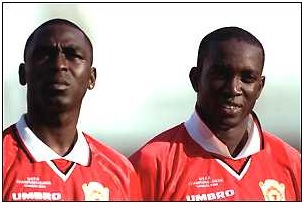
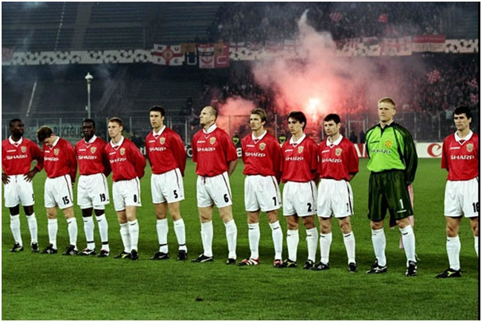

Chương 30

hói “keo cú” của BLĐ United nhiều phen làm Alex Ferguson thất vọng. Fergie rất muốn đưa về các siêu sao như Ronaldo, Gabriel Batistuta, hay Alan Shearer, nhưng các sếp lần nào cũng làm kỳ đà. Năm 1996, đại diện của Ronaldo từng mời United mua anh, nhưng BLĐ CLB từ chối không đáp ứng cái giá 20 triệu, cùng mức lương 50000 bảng/tuần của “người ngoài hành tinh”, bởi theo khung lương ở Old Trafford, không ai được phép lãnh quá 23000 bảng. Tuy thế, Ferguson không nhịn được mãi. Lần lượt mất đi các trụ cột: Bruce, Cantona, và sau mùa 1997-1998 là Pallister, đồng thời mất danh hiệu vào tay Arsenal, ông biết nếu không chịu chi thật đậm để mua về ngôi sao thật sự, sẽ rất khó trở lại đỉnh cao. Do đó, lần này ông quyết tâm không nhân nhượng, mà đưa ra tối hậu thư với BLĐ, buộc họ mở hầu bao. Thấy HLV làm quá găng, BLĐ đành lùi bước, chịu để ông mang về ba cầu thủ đắt giá: Dwight Yorke[1] (12.5 triệu), Jaap Stam (10.75) và Jesper Blomqvist (4.4). Chỉ riêng tiền mua Stam đã vượt quá tổng số tiền mua Solskjaer, Johnsen, Poborsky, Cruyff, và Van der Gouw hồi 1996.
Tưởng như Quỷ Đỏ sẽ tha hồ vung tiền trong tương lai, khi tháng 8, 1998, công ty truyền thông BSkyB[2] của Rupert Murdoch hỏi mua CLB. Định giá United ở mức 623.4 triệu bảng, BSkyB sẵn sàng trả 240 xu một cổ phiếu để mua lại cổ phần từ các cổ đông hiện tại. Fan hâm mộ thành Man chia ra hai phe. Một phe cực lực ủng hộ BSkyB, lý luận rằng đây là một tập đoàn hùng mạnh, được họ chống lưng, sẽ không còn phải lo vấn đề tài chánh, có thể thoải mái tậu các cầu thủ hàng đầu thế giới. Phe kia quyết liệt chống đối, đòi giữ United ở hình thức công ty đại chúng, không muốn CLB rơi vào tay bất kỳ tập đoàn hay cá nhân nào.
Biết Ferguson có uy tín lớn với người hâm mộ, trong cuộc họp với BLĐ United, phía BSkyB đề xuất trả cho Fergie hai triệu bảng, để ông lên tiếng ủng hộ việc mua đội. Edwards bác bỏ, cho rằng thương lượng mua bán là việc thuần túy giữa BLĐ và BSkyB, Ferguson hoàn toàn không liên quan. Thấy chẳng ai hỏi đến mình, vị HLV trưởng giữ thái độ trung lập, không phẩm bình điều gì.
Không lôi kéo được Ferguson, phe ủng hộ có phần yếu thế. Phe chống đối hoạt động rất mạnh, mở chiến dịch “anti Murdoch” rầm rộ. Họ vận động các chính trị gia, đề nghị Ủy Ban Chống Độc Quyền Nhà Nước can thiệp. Tháng 4, 1999, Ủy Ban ra quyết định, cấm không cho BSkyB mua United, vì BSkyB hiện đang giữ độc quyền phát sóng giải Ngoại Hạng; vừa nắm bản quyền lại vừa làm chủ đội bóng là mâu thuẫn lợi ích.
Trở về thời điểm đầu mùa 1998-1999, các cầu thủ United đã dần quen với việc thiếu vắng Cantona. Thêm vào đó, nhân sự mới khiến đội hình CLB trở nên hoàn hảo. Từ khi đến Old Trafford, dù đá cặp với Cantona, Sheringham hay Solskjaer, Andy Cole chưa bao giờ phát huy được hết khả năng, nay gặp Yorke, anh mới tìm được tri âm, thể hiện đúng phong độ ngày nào ở Newcastle. Lúc Yorke chơi cùng Cole, giữa hai người có sự cộng hưởng, gây nên hiệu ứng tăng bội, và cả hai nâng nhau lên một tầm cao mới.Yorke đơn lẻ chỉ là một, Cole đơn lẻ chỉ là một, song khi sát cánh, một cộng một không chỉ là hai, mà phát huy ra tới ba tới bốn. Khi Xavi và các đồng đội hãy còn học việc, Yorke và Cole đã chơi tiki-taka. Với sự đồng điệu tuyệt vời, dường như người này chỉ cần dùng trực giác cũng biết được người kia đang ở đâu. Sự đồng điệu ấy làm nền tảng cho những pha phối hợp như thêu hoa dệt gấm, cho những đường bật tường, những pha chuyền bóng đan xen nhanh như cắt giữa cặp “hắc phong song sát”. Bóng vừa rời chân Yorke đã đến chân Cole, rồi thoắt cái lại về chân Yorke, khiến hậu vệ đối phương không biết đâu mà lường.
Dưới tuyến phòng thủ, Jaap Stam là một bản hợp đồng đắt xắt ra miếng. Thế hệ 1998-1999 chỉ sở hữu một trung vệ ngôi sao là Stam, chứ không có cặp trung vệ thép như Bruce-Pallister hay Vidic-Ferdinand, nhưng không vì thế mà hàng hậu vệ kém đi. Stam tỏa sáng đến độ anh có thể gánh giùm gánh nặnh cho người đá cặp. Dù là Ronny Johnsen hay Henning Berg, ai chơi bên trung vệ người Hà Lan cũng cảm thấy vô cùng tự tin. Phía sau Stam vẫn là Peter Schmeichel vững chắc như tường thành, còn hai bên là Gary Neville và Denis Irwin công thủ toàn diện.
Song nếu chỉ được chọn một tuyến để tuyên dương, có lẽ đó là tuyến tiền vệ. Nơi đây có một Roy Keane hừng hực lửa, vừa quyết liệt tràn đầy sức mạnh vừa tinh tế sáng tạo, một Paul Scholes năng nổ, với những cú sút xa mạnh như đại bác. Bên cánh trái là Ryan Giggs lắt léo, uyển chuyển, tốc độ thần phong; cánh phải là chân chuyền cự phách David Beckham.
Beckham khi ấy đã bắt đầu làm ông thầy Alex Ferguson khó chịu. Anh lúc nào cũng kè kè điện thoại bên tai, “tám” chuyện cùng bạn gái Victoria[3]. Một tuần bảy ngày, anh bay hai đến ba chuyến sang Ireland thăm người yêu. Tuy vậy, khi trở về sau World Cup 1998 với tư cách “tội đồ dân tộc” (lãnh thẻ đỏ trong trận Anh - Argentina), anh vẫn được Ferguson ủng hộ hết lòng. Như để đền đáp thầy, Beckham thể hiện phong độ đỉnh cao trong sự nghiệp. Những đường tạt bóng của anh chính xác đến từng cen ti mét, đưa bóng đến tận đầu đồng đội; những cú đá phạt sẽ xé gió tạo hình vòng cung, lượn vào góc chết khung thành, gây ác mộng cho bất kỳ thủ môn nào. Về tạt bóng, Beckham là số một thế giới, không cần tranh cãi. Về sút phạt, anh cũng thuộc hàng “ngũ hổ”, ngang ngửa Juninho Pernambucano (Brazil), Marcos Assuncao (Brazil), Pierre van Hooijdonk (Hà Lan), và Sinisa Mihajlovic (Nam Tư).
Cũng không thể không nhắc chiều sâu đội hình của United. Khoảng cách giữa chính thức và dự bị không lớn, nên khi cần, các cầu thủ dự bị có thể trám chỗ không mấy khó khăn. Vắng Irwin có Phil Neville, vắng Keane có Butt, vắng Giggs có Blomqvist, và tất nhiên, khi Cole và Yorke cần nghỉ ngơi, đã có Sheringham và Solskjaer. Cặp trung phong da trắng tuy không ăn ý bằng hai anh da màu, nhưng khả năng chớp thời cơ trong những thời điểm quyết định thì thiên hạ vô song. Solskjaer có lẽ là trường hợp độc nhất vô nhị, luôn giữ vai trò dự bị, mà vẫn được xếp vào hàng ngũ những huyền thoại.

“Hắc Phong Song Sát” Andy Cole (trái) và Dwight Yorke (Ảnh: Bbc.co.uk)
Nhờ Cúp C1 cải tổ, tăng số đội lên, dù chỉ là á quân nước Anh, United vẫn được tham dự.
Dễ dàng vượt qua LKS Lodz (Ba Lan) ở vòng sơ loại, CLB lọt đúng vào bảng tử thần trong vòng đấu bảng. Brondby, đội bóng cũ của Schmeichel, cam chịu thân phận lót đường, song thử thách lớn đến từ hai đại gia Bayern Munich và Barcelona. United trút mưa gôn vào lưới Brondby (6-2 và 5-0), và hòa cả bốn trận còn lại, trong đó hai trận hòa cùng tỷ số 3-3 với Barcelona là đỉnh cao của bóng đá tấn công. Quỷ Đỏ lẽ ra đã thắng trận lượt đi ở Old Trafford, nếu trọng tài không ưu ái cho Barca hai quả phạt đền. Lượt về ở Camp Nou, Yorke lập cú đúp, Cole cũng đóng góp một bàn, trước khi Rivaldo kịp thời tỏa sáng giành lại một điểm cho chủ nhà. Nhưng như thế vẫn là chưa đủ cho đội bóng xứ Catalonia. Họ đành ngậm ngùi nhìn hai kình địch bước vào vòng trong.
Tại giải VĐQG, United khởi đầu chuệch choạc. Thắng hai hòa hai trong bốn trận đầu tiên, đội phơi áo 0-3 trước Arsenal trong trận thứ năm. Mãi đến đầu tháng 12, họ mới ổn định phong độ, leo lên ngôi đầu bảng.
Tháng 1, 1999, Quỷ Đỏ giành thắng lợi trước Liverpool tại vòng bốn Cúp FA, trong một trận đấu không giành cho người yếu tim. Bị dẫn trước từ phút thứ 3, mãi phút 88, Yorke mới đánh đầu thành công, cân bằng tỷ số. Đúng phút cuối cùng, “siêu dự bị” Solskjaer ghi bàn thứ hai, đá đối thủ rơi đài. Hai tuần sau, lại là Solskjaer khiến người hâm mộ phát cuồng, khi vào sân thay người ở phút 72 trong trận gặp Nottingham Forest tại giải Ngoại Hạng, làm liền bốn bàn trong 13 phút, giúp United thắng đậm đà 8-1.
Sang tháng ba, Solskjaer và đồng đội phải liên tiếp đương đầu hai đối thủ mạnh: Inter Milan (tứ kết Cúp C1) và Chelsea (vòng 6 Cúp FA). Lượt đi trên sân nhà, United hạ Inter 2-0, với hai bàn thắng đúc cùng một khuôn: Đều là Yorke đánh đầu từ những quả tạt thần sầu của Beckham. Lượt về, Ferguson chỉ đạo Johnsen và Keane chơi bài phòng ngự từ xa, bắt chết cầu thủ số một thế giới Ronaldo. Paul Scholes lập công, đem về trận hòa 1-1. Gặp Chelsea cũng phải đá hai lần, vì lần đầu hòa không tỷ số. Trận tái đấu, United thắng 2-0, với một cú đúp nữa của Yorke.
Vừa leo qua núi lại gặp núi cao hơn, Quỷ Đỏ phải đối đầu Arsenal và Juventus ở bán kết FA và C1; và trong hai cuộc đấu ấy, họ đều phải qua những phút căng thẳng tột cùng. Nếu trận hòa 0-0 với Arsenal ngày 11 tháng 4 không để lại ấn tượng đặc biệt, cuộc tái đấu ba ngày sau khiến người hâm mộ mãn nhãn, trải qua đủ cung bậc xúc cảm. David Beckham sớm đưa United vượt lên, nhưng Bergkamp gỡ hòa trong hiệp hai. Từ đó, mọi thứ đều chống lại Quỷ Đỏ. Năm phút sau bàn thắng của Bergkamp, Roy Keane nhận thẻ đỏ rời sân. Đến những phút bù giờ, Arsenal được hưởng một quả penalty, sau pha phạm lỗi của Phil Neville trong vòng cấm. Bergkamp chạy đà, rồi sút cực căng vào góc phải, Schmeichel bay người, hóa giải thành công. Không có chiến thắng cho Pháo Thủ, mà là 30 phút hiệp phụ.
Chỉ vào sân từ ghế dự bị, Ryan Giggs hãy còn sung sức, liên tục tra tấn hàng thủ đối phương trong giờ đấu thêm. Phút 109, nhận đường chuyền từ…Patrick Vieira, tiền vệ xứ Wales tự tin dẫn bóng vào phần sân Arsenal, chạy một mạch 60 mét, tả xung hữu đột, lừa qua năm hậu vệ đối phương, trước khi sút rung nóc lưới thủ thành David Seaman. Chỉ trong 10 giây ngắn ngủi, anh đã làm nên điều kỳ diệu, ghi bàn thắng đẹp nhất trong lịch sử 140 năm Cúp FA! Khi trọng tài nổi còi dứt trận, 10 Quỷ Đỏ ca khúc khải hoàn trước 11 Pháo Thủ! CĐV tràn vào sân, công kênh người hùng Giggs trên vai. Arsene Wenger thì cay cú đến độ từ chối bắt tay Alex Ferguson.
Cũng chính Giggs đã cứu rỗi United trước Juventus. Ngày 7 tháng 4, ngay tại Old Trafford, đội chủ nhà chơi một trận thiếu sức sống, để “Lão Phu Nhân” áp đảo từ đầu chí cuối. May sao, Giggs kịp phá lưới vào phút…92, gỡ hòa 1-1. Dù vậy, lợi thế vẫn thuộc về Juventus.Nếu nhìn vào thống kê, sẽ thấy suốt 41 năm trời chinh chiến trên đấu trường châu Âu, Juve chỉ thua bảy lần trên sân nhà. Với những Zinedine Zidane, Didier Deschamps, Alessandro Del Piero, nhà vô địch Ý được đánh giá là đội bóng mạnh nhất thế giới, ít ai dám nghĩ họ có thể thất bại ở “đất thánh” Delle Alpi.
Quả nhiên, mới phút 11 trận lượt về, Juventus đã vượt lên 2-0, nhờ cú đúp của Inzaghi. Song chỉ từ đây, người ta mới nhận thấy sức mạnh tinh thần của Quỷ Đỏ lớn lao nhường nào. Bị dồn vào thế chân tường, toàn đội bỗng bùng nổ, hăng hái chơi với …200% sức lực. Không hổ danh thủ quân, Roy Keane vừa đốc thủ đồng đội tiến lên, vừa đích thân lăn xả như cảm tử quân, thà chết chẳng lùi. Anh và Butt lấn áp cặp Deschamps-Davids, hoàn toàn chiếm lĩnh khu trung tuyến. Phút 24, Beckham đá phạt góc, chính Keane bật cao đánh đầu, rút ngắn tỷ số. Phút 34, Cole tạt bóng, Yorke đánh đầu: Hai đều! Tình thế đảo ngược, Juventus trở nên cuống quít, bởi nếu kết quả giữ nguyên, họ sẽ bị loại theo luật bàn thắng sân khách. Trong khi đó, United bình tĩnh rút về phòng ngự, dàn thế trận chờ đòn phản công. Gần cuối hiệp hai, Yorke dùng kỹ thuật cá nhân lừa qua hai hậu vệ Juve, bị thủ môn Peruzzi đốn ngã. Trọng tài không cần thổi penalty, vì Cole đã kịp lao theo, đá bồi vào lưới trống, kết thúc cuộc ngược dòng không tưởng.
Điều đáng tiếc duy nhất sau trận cầu vĩ đại là Keane và Scholes cùng dính thẻ vàng, sẽ phải vắng mặt tại chung kết. Không kể hai thẻ này, United đã có 90 phút hoàn hảo. Cũng như các trận gặp Bilbao năm 1957, Real Madrid năm 1968, hay Barcelona năm 1984, các chú quỷ đã thể hiện một tinh thần thép, một ý chí bất khuất, bất diệt, không bao giờ buông kiếm chịu thua. Bốn trận đấu khác nhau, bốn thế hệ khác nhau, nhưng vẫn tinh thần ấy, vẫn ý chí ấy. Truyền thống United như sợi chỉ đỏ chạy xuyên các thời đại, hay nói một cách hiện đại hơn, đã trở thành ADN thấm trong máu từng cầu thủ.
Trước khi bước vào chung kết C1, United còn hai mặt trận cần chinh phục. Ngày 16 tháng 5, 1999, như một cữ dượt nhẹ, đội hạ Tottenham 2-1 nhờ công Beckham và Cole, đăng quang giải Ngoại Hạng, nhiều hơn Arsenal đúng một điểm. Ngày 22, gặp Newcastle, chung kết Cúp FA, Ferguson mạnh dạn cho Butt, Stam và Yorke nghỉ ngơi. Chẳng cần tung hết sức, CLB vẫn thắng dễ 2-0, với bàn thắng đến từ Sheringham và Scholes. Cú đúp thứ ba trong năm năm thế là hoàn tất, và ba bước tới thiên đàng như thế đã xong hai.

Đội hình United trong trận bán kết lượt về Champions League gặp Juventus (từ phải sang): Keane, Schmeichel, Irwin, Gary Neville, Beckham, Stam, Johnsen, Butt, Yorke, Blomqvist và Cole (Ảnh: Dailystar.co.uk)
Chú thích:
[1] Aston Villa không hề muốn bán Yorke, nhưng anh nhất quyết ra đi. Ba lần Yorke tìm đến tận nhà chủ tịch Villa, khóc lóc năn nỉ xin được sang United. Chủ tịch cuối cùng phải động lòng.
[2] Hình thành sau sự sáp nhập của Sky Television và British Satellite Broadcasting.
[3] Hai người kết hôn vào tháng 7, 1999.